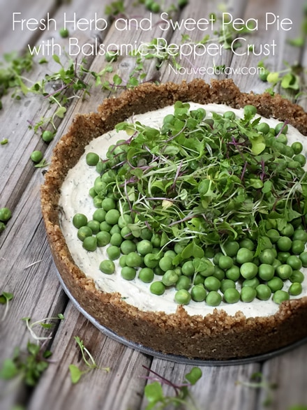

Fresh Herb and Sweet Pea Pie with Balsamic Pepper Crust

~ raw, vegan, gluten-free ~
This fresh herbed sweet pea pie features a velvety smooth “cheese” filling that is laced with basil, mint, and dill. All contained in a walnut, balsamic peppered crust, creating the perfect foundation for a one-bite-wonder… capturing Spring on your plate year round.
I really can’t decide who is the star of this dish… the peas, the herbed “cheese,” the crust, or the fun whimsical micro greens. Individually they are beautiful; together they are a well-orchestrated symphony.
Fresh basil has an initial subtle peppery flavor which evolves into a slightly sweet anise flavor. I brought this in to compliment the peppery crust… thus creating “flavor layering.” When mincing the basil, you will notice that the edge of the cuts becomes dampened with natural oils. Stop, put down your knife, lift your fingers towards your nose, and take a few deep inhales. Basil inspires clarity and positive thinking… and you thought this pie was only going to taste good! Never underestimate the power of our foods. :)
And since basil is a member of the mint family, I felt it was only right to incorporate fresh mint into the “cheese.” I believe in the unity of family! The flavor of mint is refreshing with mellow hints of lemon. And it also helps combat the bloating and gas caused by the digestion of rich, fatty foods. Which made it perfect to pair with the cashews and walnuts.
And then there is dill… oh my sweet dill. To me, dill is one of the prettiest herbs, so wispy and fernlike. I have been known to tuck a sprig or two into a vase when creating flower bouquets. Should you start to feel overwhelmed by the thought of fermenting your own “cheese” or perhaps you find yourself in a crisis as all the sweet peas scatter to the floor… stop and inhale the fresh scent of dill… in aromatherapy it has calming characteristics.
So, as you can see, there is more than what meets the eye when it comes to this beautiful sweet pea pie. Not only was I taking your taste buds into consideration… I was making sure that you remain calm, stay positive in your thinking… hoping to inspire clarity… as well as making sure your digestion is being supported, so you don’t have flatulence. Yes, I just said the word flatulence. I can’t end this with the word flatulence, my Great Grandmother would have my hide… so I will end in saying, “Have a wonderful day!” amie sue
Ingredients:
Yields 7-9″ pan (I used 8″)
Crust:
- 2 1/2 cups raw walnuts, soaked & dehydrated
- 2 Tbsp balsamic vinegar
- 1 1/2 tsp white pepper
- 1/2 tsp Himalayan pink salt
Filling:
Add in:
- 1 Tbsp lemon juice
- 1 Tbsp chopped fresh basil
- 2 Tbsp chopped fresh dill
- 1 Tbsp chopped fresh mint
- 1/2 tsp black pepper
- 1/2 tsp Himalayan pink salt
Topping:
- 1 1/2 cups (190 g) fresh sweet peas
- 1 cup of microgreens
Preparation:
Crust:
- Prepare the pan by lining the base with plastic wrap. Set aside.
- Place the walnuts, salt, and pepper in the food processor, fitted with the “S” blade. Process to a small crumble.
- It’s best to use dry walnuts for the sake of texture. Not freshly soaked.
- Add the balsamic vinegar and process until the crust batter sticks together when pinched. This won’t take long.
- Loosely place the crust batter evenly over the base of the tart pan.
- Press the crust firmly and evenly into the base.
Filling:
- After soaking the cashews, drain and discard the soak water. Place in a high-powered blender.
- Add the coconut milk and blend until ultra-creamy.
- Add probiotics and blend until incorporated.
- Pour the mixture into a glass bowl and cover with cheesecloth.
- Place the bowl in the oven next to the oven light. Leave to rest for 15+ hours. The longer it sits, the stronger in flavor it will become.
- Once fermented add the lemon, basil, dill, mint, salt, and pepper. Mix well and pour into the crust. Spread evenly.
- Fresh basil should not be refrigerated; it can cause the leaves to develop brown spots. It is best to keep basil in a glass of water in a cool, dry, and dark spot.
- To increase the time that your mint will stay fresh, you can place it in an air-tight container and store it in the refrigerator.
- Add the peas and microgreens. Chill for 4+ hours.
- You can hold off and add the microgreens till serving if you worry that they will wilt.
- If your peas are soft and lackluster, you can blanch them to bring out their sweet, bright flavor. I would place them in a mesh colander and pour boiling water over, making sure not to over-expose them to the heat of the water.
- Store leftovers in the fridge for 3-4 days.
© AmieSue.com